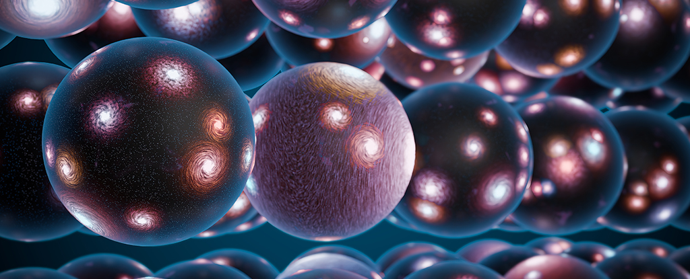
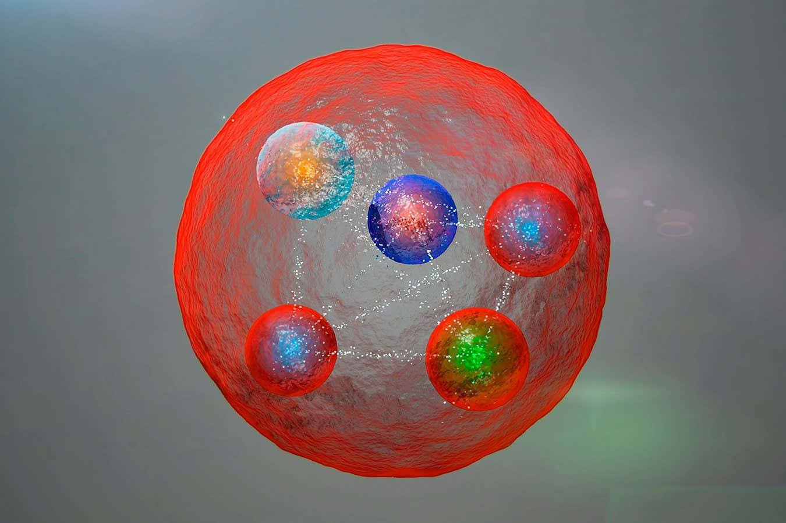
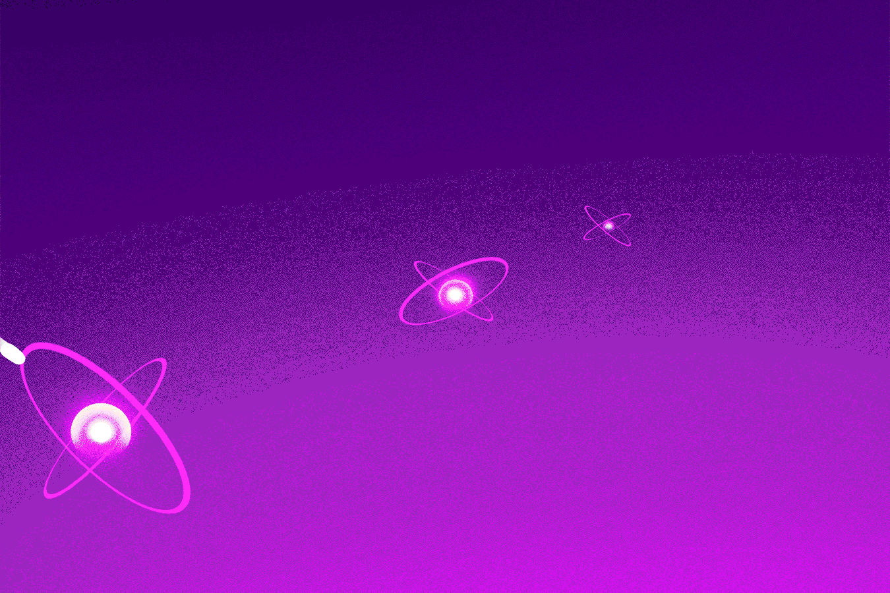
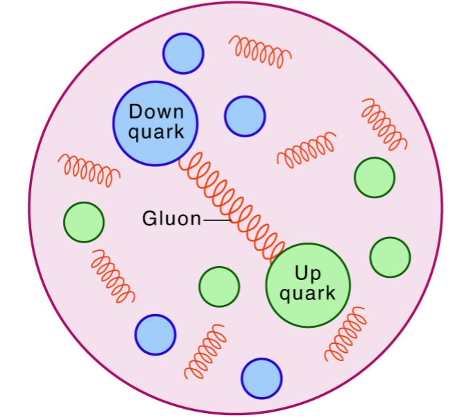
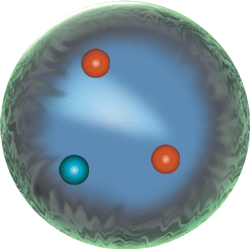

[क्षरपुरुष] के नई खोजें
निजानंद का उद्देश्य किसी वैज्ञानिक सिद्धांत को बदलना, सिद्ध करना या गलत ठहराना नहीं है,
बल्कि जिज्ञासा जगाना और स्वतंत्र शोध के लिए प्रेरित करना है।
पाठक एवं दर्शक से अपेक्षा की जाती है कि वे प्रामाणिक स्रोतों, वैज्ञानिक अनुसंधान और तर्क के आधार पर स्वयं आगे शोध करें।
मल्टीवर्स (Multiverse)

मल्टीवर्स कई ब्रह्मांडों का एक संग्रह है, जिनमें से प्रत्येक के अपने भौतिकी के नियम हो सकते हैं, जो हमारे ब्रह्मांड के साथ-साथ अस्तित्व में हैं।
ब्रह्मांड / दृश्य ब्रह्मांड (Observable Universe)

दृश्य ब्रह्मांड (Observable Universe) ब्रह्मांड का वह हिस्सा है जिसे हम पृथ्वी से देख या पहचान सकते हैं, जो उस दूरी तक सीमित है जहाँ तक प्रकाश ने यात्रा की है।
सुपर क्लस्टर (Super Cluster)

सुपर क्लस्टर आकाशगंगा समूहों का एक विशाल समूह है जो गुरुत्वाकर्षण द्वारा एक साथ बंधा होता है। यह ब्रह्मांड की सबसे बड़ी ज्ञात संरचनाओं में से एक है।
आकाशगंगा समूह (Galaxy Cluster)

आकाशगंगा समूह गुरुत्वाकर्षण द्वारा एक साथ बंधी आकाशगंगाओं का एक समूह है। ये ब्रह्मांड में ज्ञात सबसे बड़ी संरचनाएं हैं।
आकाशगंगा (Galaxy)

आकाशगंगा तारों, गैस, धूल और डार्क मैटर का एक विशाल तंत्र है जो गुरुत्वाकर्षण द्वारा एक साथ बंधा होता है। आकाशगंगाएँ सर्पिल (spiral), अंडाकार (elliptical) या अनियमित आकार की हो सकती हैं।
तारा समूह (Star Cluster)

तारा समूह सितारों का एक समूह है जो गुरुत्वाकर्षण से बंधे होते हैं और एक ही आणविक बादल से बने होते हैं। ये खुले समूह (कम घने) या गोलाकार समूह (अत्यधिक घने) हो सकते हैं।
सौर मंडल (Solar System)

सौर मंडल सूर्य और गुरुत्वाकर्षण द्वारा उससे बंधी सभी वस्तुओं का एक संग्रह है, जिसमें ग्रह, चंद्रमा, क्षुद्रग्रह, धूमकेतु और उल्कापिंड शामिल हैं।
ब्लैक होल (Black Hole)

ब्लैक होल एक ऐसी वस्तु है जिसका गुरुत्वाकर्षण इतना शक्तिशाली होता है कि प्रकाश भी इससे बच नहीं सकता। यह तब बनता है जब कोई विशाल तारा अपने अंत में ढह जाता है।
न्यूट्रॉन तारा (Neutron Star)

न्यूट्रॉन तारा एक विशाल तारे का अत्यंत घना अवशेष है जो सुपरनोवा के रूप में विस्फोटित हुआ हो। यह ज्यादातर न्यूट्रॉन से बना होता है, इसकी त्रिज्या बहुत कम (लगभग 10-20 किमी) होती है, लेकिन इसका द्रव्यमान सूर्य से अधिक हो सकता है। न्यूट्रॉन तारों में तीव्र गुरुत्वाकर्षण होता है और वे अक्सर तेजी से घूमते हैं, कभी-कभी विकिरण की किरणें छोड़ते हैं जिन्हें पल्सर कहा जाता है।
श्वेत वामन (White Dwarf)

श्वेत वामन एक तारे का छोटा, घना अवशेष है जिसने अपना परमाणु ईंधन समाप्त कर दिया है। इसमें अब संलयन नहीं होता और यह समय के साथ धीरे-धीरे ठंडा होता जाता है। अपने छोटे आकार के बावजूद, इसका द्रव्यमान सूर्य के समान हो सकता है।
तारा (Star)

तारा गर्म गैस का एक विशाल, चमकदार गोला है, जो मुख्य रूप से हाइड्रोजन और हीलियम से बना होता है। यह परमाणु संलयन (nuclear fusion) के माध्यम से ऊर्जा पैदा करता है। तारे प्रकाश और गर्मी उत्सर्जित करते हैं, और वे आकाशगंगाओं के निर्माण खंड हैं।
ग्रह (Planet)

ग्रह एक विशाल खगोलीय पिंड है जो किसी तारे की परिक्रमा करता है। यह इतना विशाल होता है कि इसके गुरुत्वाकर्षण ने इसे लगभग गोल बना दिया है और इसने अपनी कक्षा के आसपास के अन्य मलबे को साफ कर दिया है। ग्रह चट्टानी या गैसीय हो सकते हैं।
धूमकेतु (Comet)

धूमकेतु अंतरिक्ष में एक छोटा बर्फीला पिंड है, जो किसी तारे के पास होने पर एक चमकता हुआ कोमा (गैस और धूल का बादल) और अक्सर एक लंबी पूंछ विकसित करता है। धूमकेतु बर्फ, धूल और चट्टानी सामग्री से बने होते हैं।
क्षुद्रग्रह (Asteroid)

क्षुद्रग्रह अंतरिक्ष में तैरने वाली एक छोटी, चट्टानी वस्तु है। यह आकार में अनियमित होता है और ग्रह की तुलना में बहुत छोटा होता है। क्षुद्रग्रह सौर मंडल के शुरुआती गठन से बचा हुआ पदार्थ हैं।
सघन पदार्थ (Condensed Matter)

सघन पदार्थ (Condensed Matter) उन ठोस और तरल पदार्थों को संदर्भित करता है जिनके परमाणु या अणु आपस में मजबूती से जुड़े होते हैं। भौतिकी का यह क्षेत्र उनकी संरचना, गुणों और व्यवहार का अध्ययन करता है, जिसमें क्रिस्टल, अतिचालकता (superconductivity) और चुंबकत्व जैसी घटनाएं शामिल हैं।
अणु (Molecule)

अणु दो या दो से अधिक परमाणुओं का समूह है जो एक साथ बंधे होते हैं। यह किसी रासायनिक यौगिक (chemical compound) की सबसे छोटी इकाई है जो उसके रासायनिक गुणों को बनाए रखती है। अणु सरल हो सकते हैं, जैसे O₂, या जटिल, जैसे DNA।
परमाणु (Atom)

परमाणु पदार्थ की सबसे छोटी इकाई है जो किसी तत्व के गुणों को बनाए रखती है। इसमें एक नाभिक (जिसमें प्रोटॉन और न्यूट्रॉन होते हैं) होता है, जिसके चारों ओर इलेक्ट्रॉन ऊर्जा स्तरों में चक्कर लगाते हैं। परमाणु मिलकर अणु (molecules) बनाते हैं, जिनसे ब्रह्मांड के सभी पदार्थ बनते हैं।
न्यूट्रॉन, इलेक्ट्रॉन और प्रोटॉन

प्रोटॉन एक सकारात्मक आवेशित (positive charge) उप-परमाणु कण है जो परमाणु के नाभिक में पाया जाता है। यह दो 'अप' क्वार्क और एक 'डाउन' क्वार्क से बना होता है।
न्यूट्रॉन नाभिक में पाया जाने वाला एक तटस्थ (neutral) उप-परमाणु कण है। यह एक 'अप' क्वार्क और दो 'डाउन' क्वार्क्स से बना होता है।
इलेक्ट्रॉन एक नकारात्मक आवेशित मौलिक कण है जो परमाणु के नाभिक के चारों ओर चक्कर लगाता है। प्रोटॉन और न्यूट्रॉन की तुलना में इसका द्रव्यमान बहुत कम होता है।
हैड्रॉन (Hadron)

हैड्रॉन एक मिश्रित कण है जो प्रबल बल द्वारा एक साथ बंधे क्वार्क्स से बना होता है। प्रोटॉन और न्यूट्रॉन सबसे आम हैड्रॉन हैं। हैड्रॉन को बेरियॉन्स (तीन क्वार्क्स) और मेसॉन्स (एक क्वार्क और एक एंटी-क्वार्क) में वर्गीकृत किया गया है।
ग्रेविटॉन (Graviton)

ग्रेविटॉन एक काल्पनिक प्राथमिक कण है जिसे क्वांटम सिद्धांतों में गुरुत्वाकर्षण बल का वाहक माना जाता है। अन्य बल-वाहक कणों के विपरीत, इसे अभी तक प्रयोग के जरिए नहीं देखा गया है, लेकिन इसके द्रव्यमान रहित होने और प्रकाश की गति से चलने की भविष्यवाणी की गई है।
हिग्स बोसोन (Higgs Boson)

हिग्स बोसोन हिग्स क्षेत्र से जुड़ा एक मौलिक कण है, जो अन्य प्रारंभिक कणों को द्रव्यमान (mass) प्रदान करता है। इसे 2012 में लार्ज हैड्रॉन कोलाइडर में खोजा गया था और यह कण भौतिकी के 'स्टैंडर्ड मॉडल' का एक मुख्य हिस्सा है।
बोसोन (Boson)

बोसोन एक प्रकार का मौलिक कण है जो अन्य कणों के बीच बलों को स्थानांतरित करता है। फर्मिऑन के विपरीत, कई बोसोन एक ही क्वांटम अवस्था में रह सकते हैं। उदाहरणों में फोटॉन (विद्युत चुंबकीय बल), ग्लूऑन (प्रबल बल), W और Z बोसोन (दुर्बल बल), और हिग्स बोसोन (जो कणों को द्रव्यमान देता है) शामिल हैं।
ग्लूऑन (Gluon)

ग्लूऑन एक मौलिक कण है जो प्रबल परमाणु बल (strong nuclear force) को वहन करता है। यह प्रोटॉन और न्यूट्रॉन के अंदर क्वार्क्स को बांधता है, जिससे परमाणु नाभिक (atomic nuclei) एक साथ जुड़े रहते हैं।
फोटॉन (Photon)

फोटॉन प्रकाश और सभी विद्युत चुंबकीय विकिरण (electromagnetic radiation) का मौलिक कण है। इसका कोई द्रव्यमान (mass) नहीं होता, यह ऊर्जा ले जाता है, और विद्युत चुंबकीय बल का वाहक है।
टाऊ (Tau)

टाऊ एक मौलिक उप-परमाणु कण है जो इलेक्ट्रॉन के समान है लेकिन काफी भारी है। इसमें नकारात्मक विद्युत आवेश होता है और यह बहुत अस्थिर होता है, जो तेजी से हल्के कणों में बदल जाता है।
म्यूऑन (Muon)

म्यूऑन एक मौलिक उप-परमाणु कण है जो इलेक्ट्रॉन के समान है लेकिन उससे बहुत भारी है। इसमें नकारात्मक विद्युत आवेश (negative charge) होता है और यह अस्थिर होता है, जो बहुत कम समय के बाद अन्य कणों में बदल जाता है।
क्वार्क्स (Quarks)

क्वार्क्स वे मौलिक कण हैं जिनसे प्रोटॉन और न्यूट्रॉन बनते हैं, जो परमाणुओं के निर्माण खंड (building blocks) हैं। वे 'ग्लून्स' नामक कणों द्वारा ले जाए जाने वाले प्रबल बल (strong force) द्वारा एक साथ बंधे रहते हैं। क्वार्क्स छह प्रकार के होते हैं, जिन्हें 'फ्लेवर' कहा जाता है, और वे प्रकृति में कभी अकेले नहीं पाए जाते।
असाधारण तंतु (Super strings)

सुपरस्ट्रिंग थ्योरी 'सुपरसिमेट्री' को शामिल करके स्ट्रिंग थ्योरी का विस्तार करती है, जिसका लक्ष्य सभी मौलिक बलों और कणों को एक साथ जोड़ना है।
बंद तंतु (Closed string)

बंद तंतु (Closed string) एक लूप की तरह होता है जिसका कोई सिरा नहीं होता। इसके कंपनों में 'ग्रेविटॉन' शामिल है, जो गुरुत्वाकर्षण से जुड़ा कण है।
खुला तंतु (Open string)

खुला तंतु (Open string) के दो स्वतंत्र सिरे होते हैं। इसके कंपन पदार्थ के कणों और विद्युत चुंबकीय (electromagnetic) और परमाणु बलों जैसे बल वाहकों का प्रतिनिधित्व करते हैं।